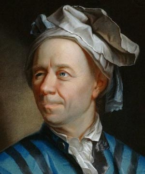

Leonard Euler
The greatest mathematician in history

A portrait depiction of Euler staring off into the distance.
Here is a time line of Euler's achievements:
- 1707 - Leonard Euler was born on this day to Paul Euler and Marguerite Brucker.
- 1723 - Euler received his Master of Philosophy with a thesis that compared the philosophies of Descartes and Newton."
- 1727 - Euler was made an associate of the Paris Academy of Sciences.
- 1731 - Euler became a Physics professor
- 1734 - Euler married Katharina Gsell.
- 1735 - After an illness Euler was left almost blind in his right eye.
- 1741 - Euler left St. Petersburg to take up a post at the Berlin Academy.
- 1766 - Euler suffered a cataract in his good left eye, leaving him almost completely blind.
- 1771 - Euler lost his home in a fire in St. Petersburg.
- 1773 - Euler lost his wife Katharina after 40 years of marriage.
- 1783 - Euler suffered a brain hemorrhage and died a few hours later in Saint Petersburg.
If you have time, you should read more about this incredible human being on his Wikipedia entry.